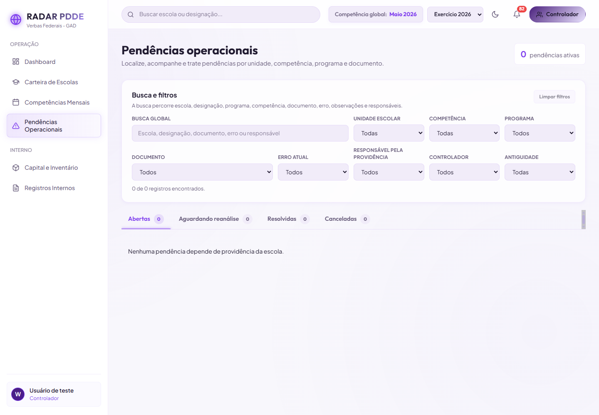
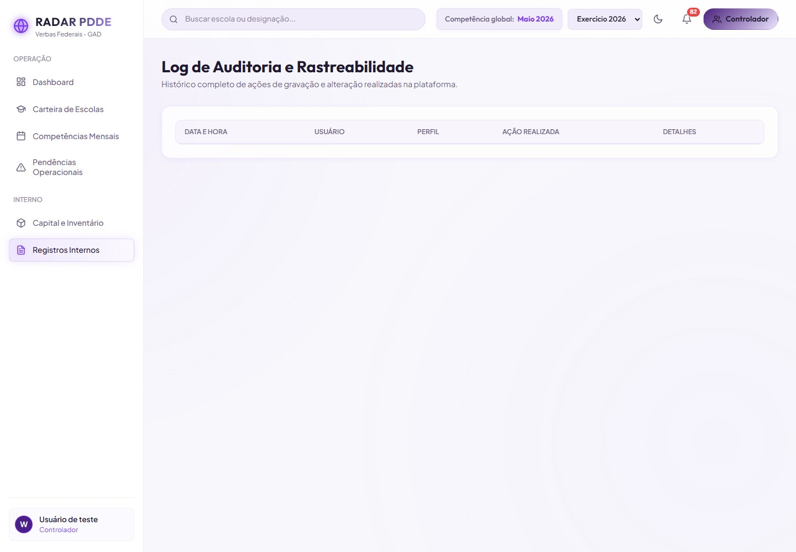

RADAR PDDE · gate visual desktop
Mesmo viewport e mesmos dados. A proposta explica o recorte e orienta a recuperação sem alterar filtros, contagens ou as quatro filas.

Com a competência global e os filtros atuais, não há itens na fila Abertas. As demais filas continuam disponíveis nas abas acima.
RADAR PDDE · gate visual desktop
Mesmo viewport e mesmos dados. A proposta esclarece a geração automática do histórico sem oferecer uma ação de criação indevida.

As ações de gravação e alteração aparecerão aqui com data, usuário, perfil, ação e detalhes. O histórico será preenchido automaticamente conforme o RADAR for utilizado.